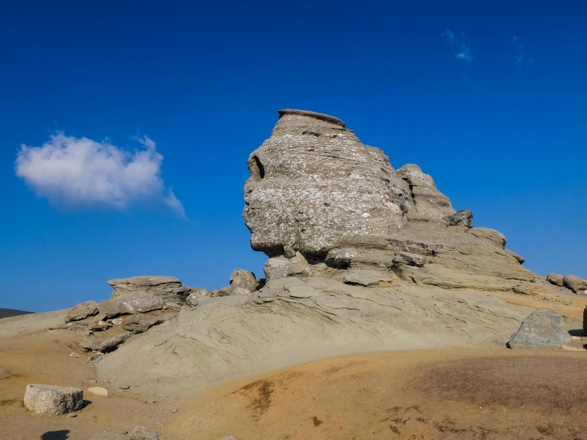
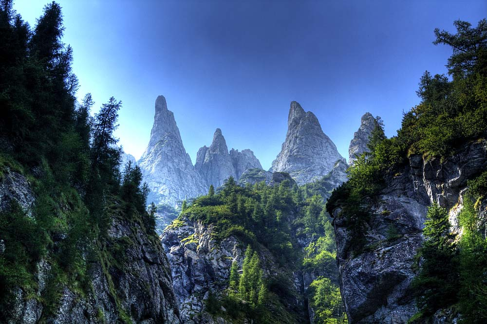

The amazing Carpathians
Imagine entering a world of unspoilt mountains and valleys, ancient virgin forests inhabited by wolves and bears; majestic meadows of wild flowers, timeless villages that have preserved their centuries-old traditions and authentic folk crafts.
Without having the fame of the Alps or the spectacular altitude of the Himalayas, the Carpathian Mountains mesmerize with their sometimes terrifying wilderness, their ridges covered with tall fir-trees which seem to defy gravity or the beauty of their meadows where gorgeous green blends with lively yellow and blue. It is the place imagined by Tolkien, wild and sometimes unwelcoming, with a mysterious air that inspires dreams. In the Carpathian Mountains, you'll find naturally-sculpted statues with strange shapes reminding you of the Sphinx or pagan temples, old cave paintings, and thousands of caves in which were discovered fossils of big carnivorous animals that disappeared during the last ice age.The mountain range stretches from the Czech Republic through Slovakia, Poland, Hungary, Ukraine and ends in Romania.
But despite stretching across 7 countries, 51% of their total area spans over Romania's territory. The highest peak of the Carpathians is in the Tatra Mountains, at the border of Slovakia and Poland, with a height exceeding 2,600m, while the second highest peak can be found in Romania, at an altitude of more than 2,500m. The name of the mountains is derived from the old Dacian tribes called "Carpes" or "Carpi", who lived in the area of the present-day Romania, stretching from the north-eastern side of the Black Sea to the fields of Transylvania. The Romanian Carpathians are part of the eastern sector of the Carpathian Mountains and are divided into 3 geographical groups: Eastern Carpathians (split into 3 groups: The Carpathians of Maramureș and Bukovina, the Moldavian-Transylvanian Carpathians, and the Curvature Carpathians) Southern Carpathians (split into 4 groups: Bucegi Mountains, Făgăraș Mountains, Parâng Mountains, and Retezat-Godeanu Mountains) Western Carpathians (split into 3 groups: Banat Mountains, Poiana Ruscă Mountains, and Apuseni Mountains) Throughout the ages, the Carpathian Mountains have played important roles in Romania's defense system. Several fortresses, castles, and fortified churches were strategically positioned on top of cliffs and hills in order to provide better defense against invaders, and the main trade routes were built through the mountains, in close proximity to the castles and fortresses. And while the cliffs provided excellent strategic positions for fortifications, the forests and caves provided perfect escape paths and hideouts, where the civilians could retreat in case of invasions, or that the armies could use in order to ambush the enemies. The Carpathians also provided excellent spots for human settlements, and several of Romania's cities and towns are located close to them. Some of the most important ones are the medieval cities of Brașov, Cluj-Napoca, and Sibiu, but there are also several smaller cities located in mountainous regions, such as Piatra Neamț, Bicaz, or Vatra Dornei. Today, many of the fortresses and caves have been renovated and draw in thousands of tourists each year. One such example is the Scărișoara Ice Cave, the largest cave in Romania and the second largest underground glacier in south-eastern Europe. The cave was mentioned for the first time in 1847, and the first scientific research was conducted between 1921 and 1923 by Emil Racoviță, but the locals have known of the existence of the glacier for a long time. The Scărișoara Ice Cave is located in the Apuseni Natural Park, one of the many Natural Parks created on the surface of the Carpathian Mountains. There are 14 national parks in Romania, out of which 12 are located on or near the surface of the Carpathian Mountains.